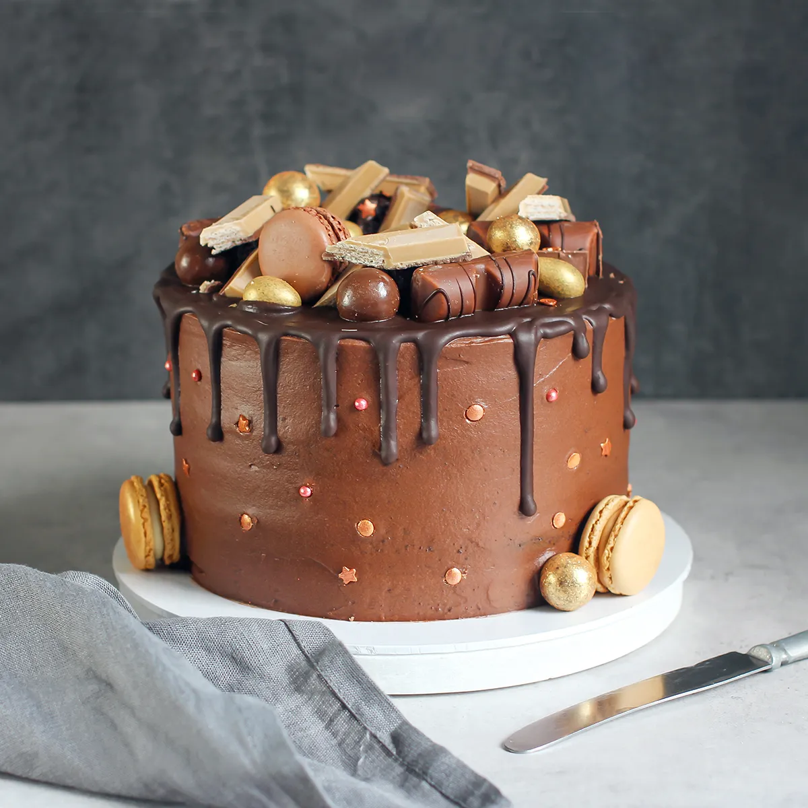

Nytt navn på siden:
Velg bakgrunnsfargen på overskriften:

Velg ingrediens:
Kakao
Smør
Sukker
Egg
Mel
Innhold i bakebollen :
Fremgangsmåte:
Ta frem alle igredienser, før du begynner.
Sett stekovn på 220 grader og gjør klar kakeform.
Bland ingrediensene godt i en bolle og hell røren over
i en smurt form. Sett kaken i nederste rille og stek i 20 min.
Legg til en knapp til under fargeknappene med teksten "Bytt farge og tekst", den skal hente overskriften "sjokoladekake"
// og bytte den til sjokoladesuppe, samtidig som bakgrunnsfargen på overskriften skal byttes til brun/en annen farge
// prøv først å lage en funksjon som setter verdiene = brun = "sjokoladesuppe", så prøv å lag en metode med variabel der du kan sende inn hva som helst av tekst og farge